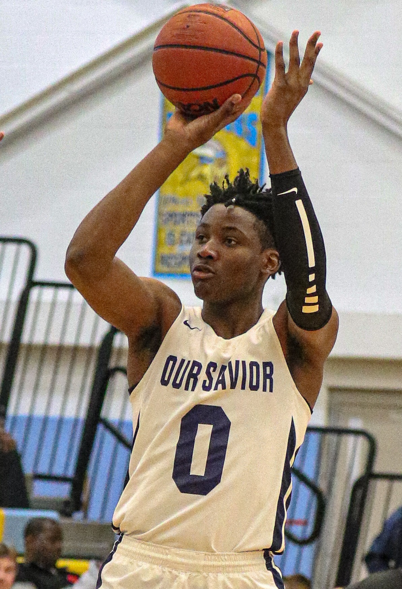

How Steve Kerr Actually Handled Jonathan Kuminga
Not "buried him." Not "stood by him." Kerr's handling of Jonathan Kuminga was messier and more human than either storyline — a coach chasing shooting and spacing in a title window, managing a 22-year-old who kept proving, in short bursts, that he was worth more minutes than he was getting.

There's no tidy way to describe what happened between Steve Kerr and Jonathan Kuminga, because it wasn't one thing. It was a rotation squeeze in October, a heart-to-heart in November, a DNP that made no sense next to a 30-point game three nights earlier, and then, when the games actually mattered, a version of Kuminga that looked exactly like what the front office drafted him to become. Kerr never buried him for good and never fully trusted him either. That in-between is the real story.
Start with the math Kerr was actually working with. This is a Warriors team built around spacing, gravity, and a 15-year-old system that punishes hesitation and rewards processing speed. Kuminga is a downhill driver first, a shooter fourth or fifth, and a system that lives and dies by the extra pass was never going to hand a bull-rush scorer the same runway a lottery team would. Kerr's job, as he saw it, wasn't to develop Kuminga in a vacuum — it was to win in June with a roster that still has Stephen Curry at the controls. Those two priorities collided constantly, and Kuminga was the one standing in the middle of the collision.
What made it feel personal, fair or not, was the inconsistency of the leash. Kuminga would answer a benching with a stretch of aggressive, downhill, two-way basketball — the exact game the Warriors needed from a fourth option — and instead of that stretch buying him security, it bought him maybe a week before the minutes shrank again. Kerr talked, publicly and often, about needing Kuminga to play "the right way," to space the floor, to trust the pass. Kuminga, just as often, looked like a player being asked to unlearn the very instincts that made him valuable in the first place. Both things were true at once, and neither man ever fully blinked.
The trade rumors were the pressure valve. Every deadline, every summer, Kuminga's name surfaced somewhere, and every time, the Warriors kept him — not because the fit was ever resolved, but because the alternative was admitting a former lottery pick had no path forward on this roster, and that's a much harder story to tell than "developing player, complicated timeline." Kerr's public line stayed diplomatic: talent was never the question, readiness was. Read between the lines of a hundred pressers and what comes through is a coach who respected the tools and never fully solved how to deploy them alongside his stars.
Where it landed, ultimately, is where these situations usually land in a win-now organization: Kuminga got real run when the Warriors were desperate enough to need it, and Kerr let the minutes shrink the moment other options looked steadier. It wasn't cruelty and it wasn't mismanagement in the cartoonish sense fans like to argue about — it was a coach optimizing for a shrinking championship window with a player whose timeline pointed somewhere else entirely. Whether that was the right way to handle a talent like Kuminga is still the argument. What isn't debatable is that it was never simple, for either of them.
More coverage: Warriors section · Columns · Bay Area Sports Blog home